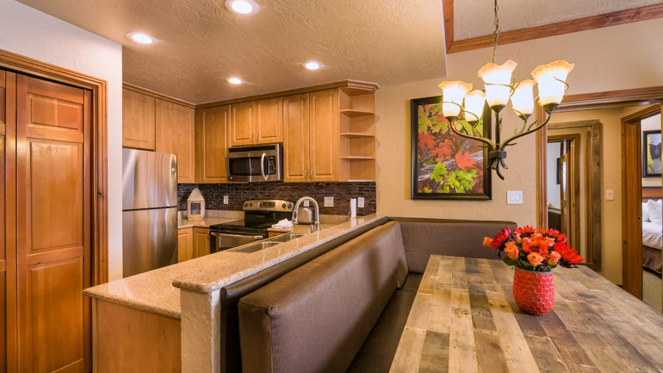
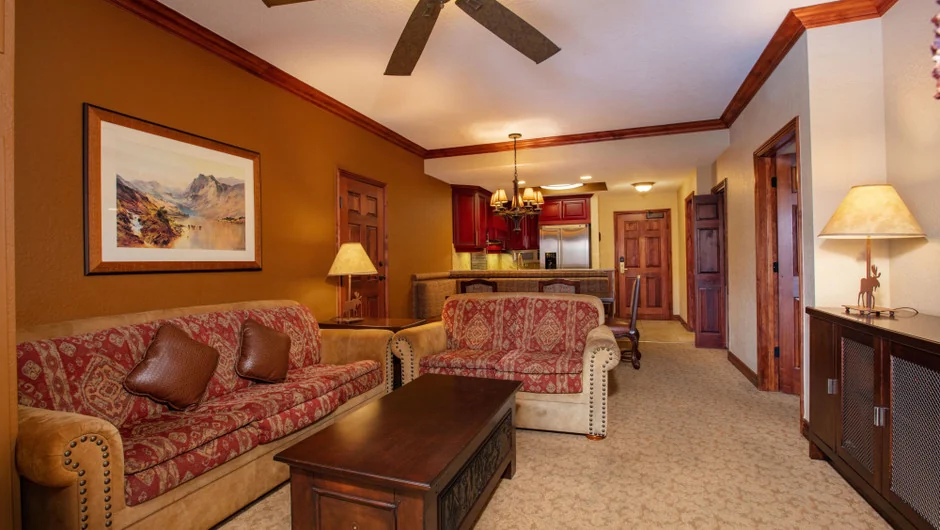

Canyons Village is not a restaurant destination and does not need to be. It covers the two kinds of evening a ski week actually produces, and almost everything is within walking distance of the lifts.

What is actually in Canyons Village
Most guides to eating here describe the village in the abstract and never name anything, which is no help when you are deciding whether to book a table or cook. This is a ski village rather than a town, so the range is narrower than Main Street, but it is not thin.
| Place | What it is | Where |
|---|---|---|
| The Farm | The village's sit-down dinner. Rustic but refined, indoor and outdoor tables, also open for lunch and apres | Canyons Village base |
| Red Tail Grill | Lunch, dinner and a late-night bar menu | Grand Summit Hotel |
| KITA | Japanese | Pendry Park City |
| Dos Olas | Mexican | Canyons Village plaza |
| Escala Provisions | Hotel restaurant and bar, known locally as epc | Hyatt Centric |
| Umbrella Bar | The round bar above the plaza, a long-standing apres fixture | Above the village plaza |
Treat that as the shape of the village rather than a guarantee. Operators, hours and even names change between seasons, and the local guides themselves tell you to ring ahead. Confirm before you build an evening around any one of them.
The two evenings a ski week produces
The proper dinner
Most groups want one good dinner out during a week, and in the village that usually means The Farm. It covers the occasion without a drive at the end of it, which matters more than it sounds when everybody has skied since nine. During a holiday week it needs booking well ahead: a table for eight at seven o'clock in February is not available on the day.
The evening nobody wants to organise
More common, and more important. Everyone is tired, somebody has wet gloves drying on a radiator, and the plan is a burger and a drink within walking distance. The casual end of the village handles this, and so does a kitchen — cooking in a few nights is what makes the week affordable rather than what makes it a compromise.

Booking a table for eight, and the gap above twelve
A villa that sleeps eight is a party of eight at dinner, and that is where village restaurants start to get particular. The Farm takes standard online reservations through Tock for parties of roughly one to twelve, keeps its lounge for small groups of adults only, and routes genuine private events — around twenty-five and up — through a separate enquiry.
That leaves a real gap between about thirteen and twenty-four guests, which fits no published route at all. If you are travelling as two or three families, the practical answer is either to book two adjacent tables rather than one long one, or to look at venues whose group menus begin around twenty. We went through the mechanics of feeding a larger group in booking three villas and the logistics that follow.
One more thing about The Farm specifically: its tables are released in batches rather than opening a whole season at once, so a date that shows nothing today may open later. Find the release that covers your own week rather than assuming it is full.
A party of eight eats better and cheaper with one dinner out and the rest in. See how the villa's kitchen and dining space are laid out before you plan the week's meals.
Eating on the mountain
On-mountain restaurants fill faster than the lifts during a busy week and empty by half past one. Red Pine Lodge, at the top of the Red Pine Gondola, is the main one on this side of the mountain. Eating at eleven or at half past one removes most of the queuing, which is the single most effective habit on a crowded mountain.
If you are staying close to the base, going back to the unit for lunch beats both. It is cheaper, warmer, and it produces the afternoon reset that keeps children skiing later in the week.
Buying wine in Utah, and the Presidents' Day trap
Utah's rules catch visitors out, and one of them lands squarely inside the villa's own Presidents' Week. Supermarkets sell beer up to five per cent alcohol and nothing stronger; wine and spirits come only from state liquor stores, which close on Sundays and on state and federal holidays.
Presidents' Day 2027 falls on Monday 15 February, inside the 13 to 20 February ski week. A group arriving on Saturday the 13th therefore meets two consecutive closed days — Sunday the 14th and Monday the 15th — before it can buy wine. Buy on the way in, or on the Saturday. The 21 to 28 March week is easier, because Easter Sunday is not a federal holiday and only the Sundays close. Confirm current hours with the state before you rely on either.
For everything else, the supermarket at Kimball Junction is a few miles short of the village on the way in from the airport, which makes it the natural stop before you unpack rather than a trip you make later. There is a full list in the Park City grocery guide.
What to book before you travel
- One smart dinner, for the night you want it, with a table for your actual group size.
- A spa treatment if anybody wants one, because those fill during peak weeks too.
- Your wine and spirits run, if any part of your stay covers a Sunday or a public holiday.
- Nothing else. Leave the rest of the week flexible, because weather and tiredness will rearrange it anyway.
Free village programming fills a surprising amount of the gap, and none of it needs a reservation: apres sessions on the plaza most weekends, a weekly pub quiz, and a free Saturday concert series on the Forum Stage through March and into April. More in apres ski in Canyons Village, honestly.
Canyons Village is for convenience, not for a culinary week. Plan one good dinner there, use the casual places when nobody can face more than that, cook a few nights, and go into town once if you want a proper evening out.
Common questions
Are there restaurants in Canyons Village?
Yes. The Farm is the village's main sit-down dinner, and there is also the Red Tail Grill at the Grand Summit, KITA at the Pendry, Dos Olas on the plaza, Escala Provisions at the Hyatt Centric and the Umbrella Bar above the plaza. The range is narrower than Main Street, but everything is within walking distance of the lifts.
Do I need to book restaurants in Canyons Village in advance?
For a holiday week, yes, particularly for larger groups and prime times. A table for eight at seven o'clock in February is not generally available on the day. The Farm releases its tables in batches rather than opening a whole season at once, so a date showing nothing today may open later.
Can I book a table for a group of more than twelve?
Not through the standard online route. The Farm takes online reservations for parties of roughly one to twelve and handles private events of about twenty-five and up separately, which leaves a gap between thirteen and twenty-four that fits no published route. Book two adjacent tables, or look for venues whose group menus start around twenty.
Can I buy wine and beer in Park City supermarkets?
Beer up to five per cent alcohol, yes. Wine and spirits come only from Utah state liquor stores, which close on Sundays and on state and federal holidays. Presidents' Day 2027 is Monday 15 February, so a group arriving on Saturday 13 February meets two consecutive closed days before it can buy wine.
Is it better to eat on the mountain or go back to the unit?
If you are staying near the base, going back is cheaper and avoids the midday queues. If you stay on the mountain, eat before noon or after one, because the restaurants fill faster than the lifts and empty by half past one.
The villa this guide comes from
We own a Premier Two-Bedroom Villa inside Westgate Park City Resort, in Canyons Village. It is 1,100 square feet, two king bedrooms and two queen sleeper sofas, so it sleeps eight in one unit. Full kitchen, two bathrooms, in-unit laundry, and a short walk to the Red Pine Gondola.
It is available for Presidents' Week 2027, 13 to 20 February, and we rent it ourselves rather than through an agency.